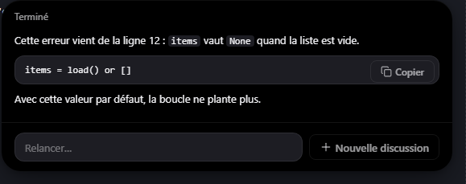
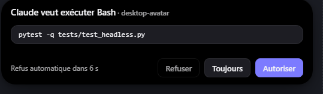

Little Wizard
Un petit sorcier qui vit au-dessus de votre barre des tâches Windows et met Claude à un clic, à propos de ce qui est à l'écran.


Posez une question sur votre écran
Une zone, une fenêtre ou une image : la réponse apparaît en haut de l'écran.
Il vous montre le chemin
Le sorcier pointe les éléments à l'écran, étape par étape.
Vos sessions Claude Code
Approuvez leurs actions sans changer de fenêtre.
Nécessite Claude Code installé et connecté (aucune clé API). L'installeur n'est pas encore signé : Windows SmartScreen affichera un avertissement au premier lancement (Informations complémentaires → Exécuter quand même).